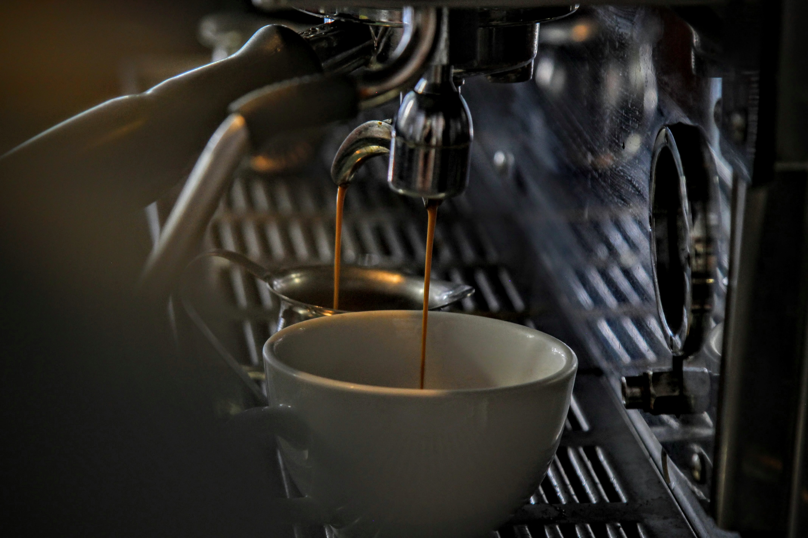

Nuestro Blog
Tomar un café antes de hacer ejercicio mejora el rendimiento entre un 2 y un 5 por ciento. Y aunque la cafeína mejora moderadamente las actividades anaeróbicas, como el levantamiento de pesas, las carreras de velocidad y el entrenamiento a intervalos de alta intensidad, al parecer presenta mayores beneficios con los ejercicios aeróbicos, como la natación, el ciclismo y el trote.
La influencia de la cafeína en el sistema nervioso se explica a partir de la adenosina, un neurotransmisor que se une a receptores específicos y nos hace sentir somnolientos: la cafeína se adhiere a esos mismos receptores, impidiendo que la adenosina actúe. Cuando la cafeína bloquea ese receptor, el resultado es un efecto estimulante. Esto libera otras hormonas, como la dopamina y la epinefrina, relacionadas con el estado de ánimo, la concentración y el estado de alerta. Y algunos estudios también demostraron que la cafeína ayuda a que los músculos produzcan más fuerza.